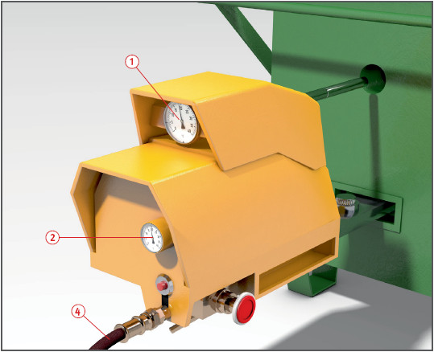
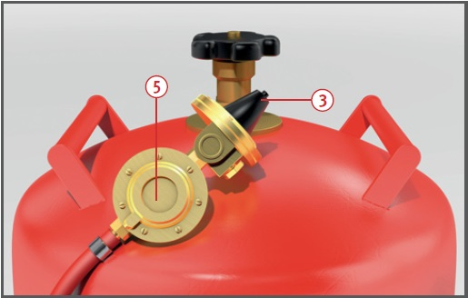

Schmelzöfen |


| 1 Prüffristen nach Betriebssicherheitsverordnung | ||
| Flüssiggasanlage | Wiederkehrende Prüfung | durch wen? |
| Aufstellung, Dichtheit | tägliche Kontrolle | Fachkundiger (Benutzer) § 2 (5) BetrSichV |
| gesamte Anlage | jährliche Prüfung | "zur Prüfung befähigte Person" § 2 (6) BetrSichV |
07/2019